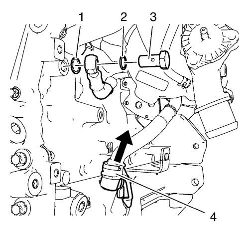
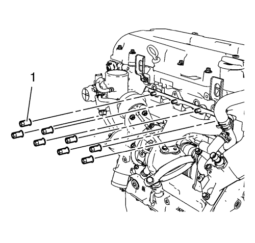
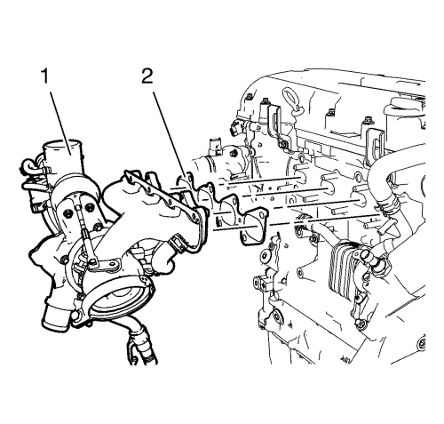

Desmontaje del turbocompresor
Herramienta especial
EN-49942 Llave de retención
Si desea informarse sobre herramientas regionales equivalentes, consultar Herramientas especiales .

- Monte la llave de retención EN-49942 (2) en el tubo de alimentación de refrigerante del turbocompresor. Introduzca una llave de trinquete (1) junto con un alargador a través de la llave de retención EN-49942 en el tornillo hueco del tubo de alimentación de refrigerante del turbocompresor.

Nota: La llave de retención EN-49942 (2) debe montarse en el tubo de alimentación de refrigerante del turbocompresor tal y como se muestra. La llave de retención debe ser montada de forma que el tubo de alimentación de refrigerante del turbocompresor no se doble al aflojar.
- Afloje el tornillo hueco del tubo de alimentación de refrigerante del turbocompresor con una llave de trinquete y un alargador (1).

- Desmonte el tornillo hueco del tubo de alimentación de refrigerante del turbocompresor (3) y los 2 anillos de junta (1) y (2).
- Desconecte el tubo de retorno de aceite del turbocompresor (4) del bloque motor.

- Desmonte el tornillo del tubo de alimentación del aceite del turbocompresor (5) del radiador de aceite.
- Desmonte el tornillo hueco del tubo de alimentación de aceite (4) y los 2 anillos de junta (1) y (3) y tape el orificio roscado del turbocompresor.
- Retire el tubo de alimentación de aceite del turbocompresor (2) y el anillo de junta de goma.
- Desconecte el tubo flexible de retorno del refrigerante del turbocompresor (6) del tubo de entrada de refrigerante del radiador de aceite y desmonte el tornillo (7) del tubo de retorno del refrigerante del turbocompresor del radiador de aceite.

- Retire las 8 tuercas del turbocompresor (1).

- Desmonte el conjunto del turbocompresor (1) y la junta del turbocompresor (2).
| © Copyright Chevrolet. All rights reserved |